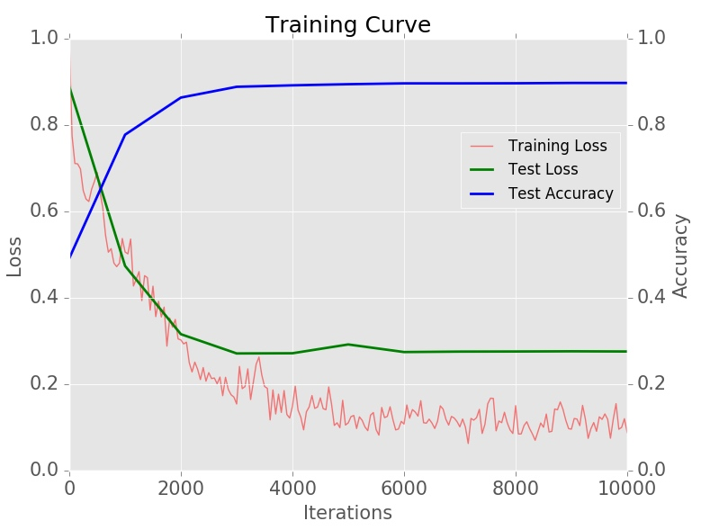
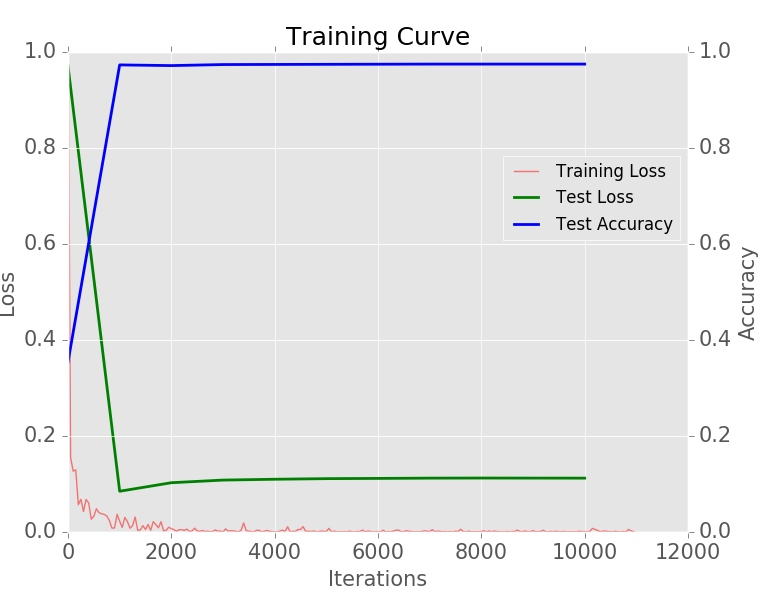

近年来，深度学习是机器学习的一大潮流。它在计算机视觉CV，自然语言处理NLP等领域取得了极大的成就。本文以深度学习框架Caffe作为工具简要讲解深度学习入门。
对深度学习和CNN比较了解的可以直接跳至第四节，对caffe比较了解的可以直接跳过本教程。
1. 深度学习概要
深度学习模型是从神经网络演变而来，主流的两个模型是CNN(Convolutional Neural Network,卷积神经网络)和RNN(Recurrent Neural Network,循环神经网络)，分别对应CV领域和NLP领域。CNN的经典实例有Alexnet, Googlenet, VGG, Resnet等模型，RNN最经典的是LSTM。经过这些年的发展，在这两个领域新推出的模型几乎都是CNN和RNN的变种和组合。
深度学习与传统机器学习最大的区别是特征由网络自动学习，而不需要手工设计特征。
作为入门，本文以caffe为工具，以猫狗图片分类问题， 使用Alexnet模型来简要介绍深度学习。
2. 神经网络
神经元是大脑的基本组成成分，神经网络正是由生物的神经元激发的灵感，它由一个个神经元连接而成，每个神经元有一个激活函数(Sigmoid, ReLu,等)。下图是一个2隐层的前馈神经网络。
每两个神经元之间的连接有一个权值系数，而深度学习学习的目标就是找到一组这样的参数使得网络输出值与实际输出值之间的差别最小，这个差别使用Loss Function(损失函数，or 代价函数cost function)来衡量。一个最简单的损失函数是均方差损失函数(Squared-error cost function):
式中W,b是网络的权值，也是我们需要求的系数，\(h_{W,b}(x)\)是网络在参数W,b下的x的输出。
学习的目标是最小化Loss函数，即是首先条件下求极值的问题。对于两三个参数的极值问题可以使用拉格朗日乘数法求极值，这就是符号微分。但是对于我们的网络，可能需要优化的参数有几百万个，符号微分方法不可行或者代价昂贵，在所有机器学习算法中使用的是自动化微分方法来求解。
自动化微分的方法基本思想如下:
1. 训练开始时随机初始化参数。
2. 计算输入x在当前参数下的输出\(h_{W,b}(x)\)(Forward)
3. 计算Loss函数J的梯度，并使用梯度更新参数W，b(Backward)，参数更新方式有SGD,AdaGrad等方法。
4. 2和3是一个iteration(迭代)，如此进行多个迭代直至满足某一条件为止。
每个iteration选取训练集的一个batch的数据进行训练，一个epoch是指将训练集遍历完所需要的iteration的个数。
具体学习过程参考UFLDL教程:Multi-Layer Neural Network
这种方法非常适合计算机矢量化实现，而且目前有很多优化的很好的张量运算库如mkl, cudnn等。
3. 卷积神经网络(Convolutional Neural Networks, CNNS or ConvNets)
CNN是多层网络，由卷积层(Convolution),池化层(Pooling), Batch Normalization(BN,标准化，将输出变为方差0，均值1的高斯分布，防止“梯度弥散”。关于梯度弥散，一个简单的例子：0.9{30}\approx 0.04，BN将经过多层变得很小的梯度的scale变大)，全连接层(Full Connection, fc),Dropout(随机失活某些神经元，避免过拟合)等组成，每层是其中的一种。第2节中讲到的前馈神经网络是一个由3层全连接层构成的网络。CNN的训练过程和第2节训练方法一致。
具体讲解参考UFLDL教程Multi-Layer Neural Network
卷积层效果图。相当于将一个固定大小的kernel(卷积核)以stride的步长对图片进行遍历。需要注意的有kernel_size, stride, pad几个参数。kernel_size表示卷积核的大小;stride表示步长，即遍历的时候每次前进的大小;pad表示对原始图片两边(水平方向和竖直方向，pad_h和pad_w)进行补零以获得期望的输出尺寸。下图是以3x3的kernel, 1的stride, 0的pad对5x5(h_i x w_i)的图片进行convolution,输出大小为3x3(h_o x w_o)。计算公式 h_o = (h_i + 2 * pad_h - kernel_h) / stride_h + 1, w_o 类似

本文中即将使用的Alexnet结构如下:
4. Caffe 实战
caffe提供c++, python, matlab和shell接口。python 和matlab接口提供类似功能，一般在predict,feature extraction的时候才会用到，用于与其他模块结合。但是一般的训练测试过程只需要用到shell接口。
在Caffe中训练模型有下面4步:
1. 数据准备。将数据处理为Caffe需要的形式。
2. 定义Model。在Caffe中定义模型架构和参数使用`.prototxt`后缀名的文件
3. 定义Solver。Solver是Caffe训练模型的入口，里面定义一些超参数如:学习率，最大Iteration数，模型参数文件保存路径等。
4. 训练模型。在命令行执行caffe的命令即可训练模型。
示例代码路径: https://github.com/klauscc/dogOrCat
上面四步只会用到shell接口。
4.1 数据准备
从 Dogs vs. Cats下载数据后解压
unzip ~/train.zip
unzip ~/test1.zip
rm ~/deeplearning-cats-dogs-tutorial/input/*.zip
Caffe的输入可以使用lmdb格式的数据，也可以使用原始图片的label文件(每一行是一张图片的路径和类别)。
创建lmdb数据库方式可以参考caffe源码中./examples/imagenet/create_imagenet.sh。如果你的训练数据不是原始图片(比如进行过预处理)，就必须使用lmdb的方式载入数据了,而创建方式就需要使用python或者c++接口了，需要的时候google caffe python lmdb就有大把的教程了。
本文使用的是原始图片进行训练，caffe需要的文件内容如下:
./data/train/cat.10607.jpg 0
./data/train/cat.7659.jpg 0
./data/train/dog.3057.jpg 1
./data/train/dog.5977.jpg 1
./data/train/cat.9318.jpg 0
./data/train/dog.625.jpg 1
./data/train/cat.12339.jpg 0
./data/train/cat.4378.jpg 0
./data/train/cat.9347.jpg 0
./data/train/dog.2431.jpg 1
./data/train/cat.12228.jpg 0
./data/train/dog.10660.jpg 1
生成这个文件代码:
import numpy as np
import glob
import os
#get all the images
database_dir="./data"
image_data = [img for img in glob.glob(database_dir+"/train/*")]
f_tv = open('train_val.txt','w')
f_test = open('test.txt','w')
#division the dataset into train and test set
for in_idx, img_path in enumerate(image_data):
if 'dog' in img_path:
label=1
else:
label=0
if in_idx % 5 ==0:
f_test.write("%s %d\n" %(img_path, label))
else:
f_tv.write("%s %d\n" %(img_path, label))
f_tv.close()
f_test.close()
4.2 定义模型
caffe 中网络模型文件使用prototxt后缀保存。模型文件
其基本结构如下
name: 'alexnet'
layer{
name: "data"
type: "ImageData"
top: "data"
top: "label"
include {
phase: TRAIN
}
transform_param {
}
}
layer {
bottom: "data"
top: "conv1"
...
}
layer {
}
...
层间关系通过 top和bottom指定，这样一个网络结构就唯一确定下来了(回顾第三节alexnet结构图)。 这里挑选其中几层讲解,参数意义看注释
layer { #输入层
name: "data"
type: "ImageData" #类型，这种类型使用4.1生成的label文件
top: "data" #输出1
top: "label" #输出2
include {
phase: TRAIN #阶段，训练阶段的输入层;测试阶段的输入层:TEST。在solver中可以指定多少个iteration TEST一次
}
transform_param {
mirror: true # data augmentation,将图片的水平翻转也加入数据集增加训练数据
crop_size: 227 #将图片crop到多大227x227
mean_value: 104 #归一化，rgb的mean value
mean_value: 117
mean_value: 123
}
image_data_param {
source: "train_val.txt" #数据来源
batch_size: 256 #batch 大小，一个iteration训练多少数据
new_height: 256
new_width: 256
shuffle: true # 是否打乱训练数据
}
}
这个输入层输出的数据尺寸为256x3x227x227(nchw. n:batchsize;c:channel;h:height;w:width. tensorflow中默认格式是nhwc)
卷积层
layer {
name: "conv1"
type: "Convolution"
bottom: "data"
top: "conv1"
param {
lr_mult: 1
decay_mult: 1
}
param {
lr_mult: 2
decay_mult: 0
}
convolution_param {
num_output: 96
kernel_size: 11
stride: 4
pad: 0
weight_filler {
type: "gaussian"
std: 0.01
}
bias_filler {
type: "constant"
value: 0
}
}
}
这个卷积层输入256x3x227x227(bottom: "data"), kernel_size, stride, pad,输出计算方法请看第三节,输出尺寸为 256x96x55x55. weight_filter 和 bias_filter是convolution参数的初始化方法。
其他各层以及每层参数意义可以参考caffe官方文档
4.3 定义solver
solver文件是caffe训练的入口文件，里面定义各种超参数。示例:
net: "alexnet/train_val.prototxt" #网络模型路径
test_iter: 200 #第一次测试的iteration
test_interval: 200 #每隔多少个iteration 对模型测试一次
test_initialization: false #是否开始训练时测试一次
base_lr: 0.001 #基础学习率(learning rate, lr)
lr_policy: "step" #lr 下降策略,step. 每隔stepsize个iteration降低lr, lr' = lr * gamma
gamma: 0.1
stepsize: 2000 # 每隔2000个iteration调整一次学习率lr
display: 20 # 每隔20个iteration 打印一次输出(loss, accuracy等)
max_iter: 450000 # 到达max_iter则停止训练
momentum: 0.9
weight_decay: 0.0005 #防止过拟合, 给loss函数加的正则项(regulation, L1,L2)前的系数
snapshot: 5000 #每隔多少个iteration保存一次模型
snapshot_prefix: "/data/tmp/klaus/dogVsCat/alexnet/dogvscat_alexnet_train" #模型参数文件保存路径
solver_mode: GPU #使用GPU进行训练
更多详细参数参考 caffe官方文档
4.4 训练模型
4.4.1 训练
在定义了模型结构(train_val.prototxt)和训练超参数(solver.prototxt)以后，就可以进行训练了。
caffe train -solver ./alexnet/solver.prototxt 2>&1| tee dogVsCat.log
其中2>&1| tee dogVsCat.log 这一行是将控制台输出保存到文件中。2>&1 是将stderr重定向到stdout中
4.4.2 可视化
在训练完以后，可以使用dogVsCat.log文件画出学习曲线
python plot_learning_curve.py ./dogVsCat.log ./dogcat_learning_curve.png

4.4.3 测试
测试模型
caffe test -model ./alexnet/train_val.prototxt -weights /data/tmp/klaus/dogVsCat/alexnet/dogvscat_alexnet_train_iter_10000.caffemodel 2>&1| tee dogVsCat_test.log
这里测试的数据是train_val.prototxt中phase:TEST对应的输入层的数据， -weights是网络权重，是训练过程保存的模型参数文件
4.5 迁移学习
深度学习需要大量数据和大量资源进行训练。而迁移学习是将一个在其他数据库上训练过的模型迁移到我们的数据库上，参数初始化为其他数据库上训练完的参数，这样可以在很短时间内达到很好的效果。
迁移学习在深度学习上一般有两种使用方式:
1. 用已训练的模型作为feature extractor: 就是固定网络的前面的若干层，只调整最后的几个全连接层
2. fine-tune 已训练的模型: 在原有参数基础上继续训练所有层，这时候往往需要调低学习率(lr)
4.5.1 使用迁移学习解决猫狗分类
imagenet是一个具有1280000张图片，1000种分类的巨大数据库。而Alexnet在在2012年Imagenet大赛上获得了冠军，也是让深度学习再次火起来的原因之一。caffe提供了在Imagenet数据库上训练的Alexnet的模型参数。
我们首先从 caffe 的 model zoo下载alexnet模型. caffe 源码提供了相应脚本:
cd $CAFFE_ROOT #change $CAFFE_ROOT with your caffe source code dir path or set the environment variable.
python scripts/download_model_binary.py models/bvlc_alexnet
这时候模型文件bvlc_alexnet.caffemodel下载到了$CAFFE_ROOT/models/bvlc_alexnet/目录下了，复制到我们的路径下，然后进行训练:
caffe train -solver ./alexnet/solver.prototxt -weights ./alexnet/bvlc_alexnet.caffemodel 2>&1| tee dogVsCat.log
-weights ./alexnet/bvlc_alexnet.caffemodel表示参数初始化为./alexnet/bvlc_alexnet.caffemodel的参数。
训练完后画出learning curve:

可以看到，相比于从头训练，模型的loss下降得更快而且最后效果更好。
结论
关于使用python接口进行预测图片参考make_predictions,这里不做赘述。python接口往往是用来做application的，比如web_demo之类的。
本文对caffe使用方法进行简单但是全面的介绍，对深度学习有些了解的童鞋应该可以使用caffe来写自己的模型了。